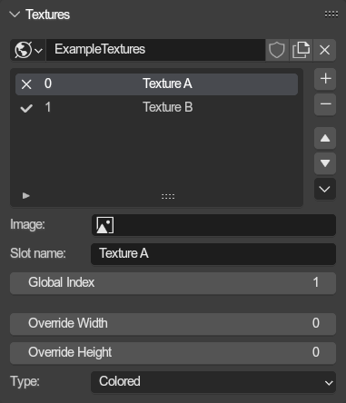
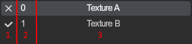
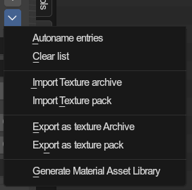

Texture List🔗︎

The addon stores textures for materials inside lists, just like the games do with textures archives. The texturing process is documented here.
The texture list uses the common list setup.
They are found on Scenes and Objects, and are stored within worlds.
Texture slots (Items)🔗︎
The list displays following properties in the item boxes:

1: Whether the texture slot has an image assigned.
2: The ID of the texture slot within the list.
3: The name of the slot, as it is exported.
Texture properties🔗︎
Every texture slot holds various properties:
Image🔗︎
The image texture to use
Slot name🔗︎
The name of the texture slot, and the name of the actual texture in the exported texture pack/archive.
Global Index🔗︎
The global texture index. The games do not really (or improperly) use them.
SA1 DX Global Index list
SA2 PC Global Index list
Override Resolution🔗︎
Used in texture packs for when you want to replace a texture with a higher resolution one. The override width and height is then used to store the original texture resolution and used for replacing the texture ingame, as the game expects a specific texture size.
Type🔗︎
Declares the image as a specific texture type. Indexed textures are mostly used for things like chao textures.
Colored: Regular RGB(A) texture.Index4: 4 bit index texture for paletts of up to 16 colors.Index8: 8 bit index texture for paletts of up to 256 colors.
Operator menu🔗︎

There are various utilities for texture lists in the drop down menu next to the list
Autoname entries🔗︎
Automatically names the textures slots in the list after the names of the images assigned to them. If no image is provided, the previous name will remain.
Clear list🔗︎
Removes all texture slots from the list.
Import texture archive🔗︎
Imports a texture archive.
Supported formats:
.pak.gvm.pvm.pvmx.prs(any of the above compressed)
Import texture pack🔗︎
Imports a texture folder pack.
Export as texture archive🔗︎
Supported formats:
.pak.gvm.pvm.pvmx.prs(any of the above compressed)
Export as texture pack🔗︎
Exports to a texture folder pack.
Generate Material Asset library🔗︎
Generates a material for each texture and stores them in a new asset library